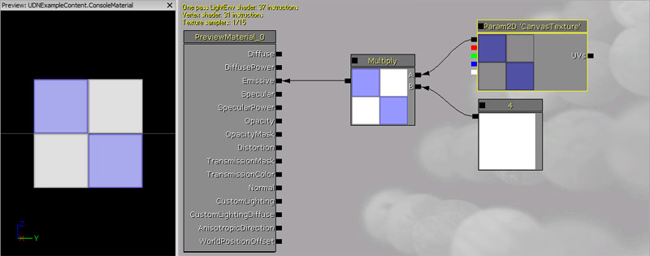

UDN
Search public documentation:
ScriptedTextures
日本語訳
中国翻译
한국어
Interested in the Unreal Engine?
Visit the Unreal Technology site.
Looking for jobs and company info?
Check out the Epic games site.
Questions about support via UDN?
Contact the UDN Staff
中国翻译
한국어
Interested in the Unreal Engine?
Visit the Unreal Technology site.
Looking for jobs and company info?
Check out the Epic games site.
Questions about support via UDN?
Contact the UDN Staff
Scripted Texture
Overview
ScriptedTexture Class
- Size[X/Y] - The dimensions of the texture in the horizontal and vertical directions, respectively. Inherited from
TextureRenderTarget2D. - Format - The
EPixelFormatformat of the texture data. Inherited fromTextureRenderTarget2D. - ClearColor - The
LinearColorused to clear the texture to. Inherited fromTextureRenderTarget2D. - bNeedsUpdate - If true, the
Render()delegate will be called at the end of the tick, just before all other rendering. - bSkipNextClear - If true, the texture will not be cleared before the next call of the
Render()delegate. This is useful if you want to draw to the texture over multiple frames.
- Create [InSizeX] [InSizeY] [InFormat] [InClearColor] [bOnlyRenderOnce] - Static. Creates a new TextureRenderTarget2D using the specified parameters. Inherited from
TextureRenderTarget2D.- InSizeX - Sets the size of the new texture in the horizontal direction.
- InSizeY - Sets the size of the new texture in the vertical direction.
- InFormat - Optional. Sets the
EPixelFormatused by the texture. - InClearColor - Optional. Sets the
LinearColorto clear texture to. - bOnlyRenderOnce - Optional. If true, the texture will only update a single time, the first frame it is created.
- Render [C] - The delegate called to draw to the texture.
- C - The Canvas object used to draw to the texture for the current frame.
ScriptedTexture Setup
ScriptedTexture Creation
First, a new ScriptedTexture must be created in your class. TheCreate() function is used for this, though it may not be obvious how to use it since it returns a TextureRenderTarget2D.
var ScriptedTexture CanvasTexture; ... CanvasTexture = ScriptedTexture(class'ScriptedTexture'.static.Create(1024, 1024,, ClearColor));
Create() static function is called from the ScriptedTexture class and then cast to a Scriptedtexture. This can then be assigned to a ScriptedTexture variable to reference the new ScriptedTexture.
Assigning ScriptedTexture
Once the ScriptedTexture is created, it needs to be assigned to a Material in order to be used. This requires a little setup in UnrealEd as we need a Material with a TextureSampleParameter2D expression we can assign the ScriptedTexture to. 
var StaticMeshCompeonent Mesh; //Mesh used to display the material in-game
var MaterialInstanceConstant CanvasMaterial; //new material instance to assign ScriptedTexture to
var MaterialInterface CanvasMaterialTemplate; //Material created in UnrealEd with TextureSampleParameter2D
var Int CanvasMaterialIndex; //Index of material on mesh to assign new Material to
var Name CanvasMaterialParameterName; //Name of TextureSampleParameter2D in CanvasMaterialTemplate
...
CanvasMaterial = Mesh.CreateAndSetMaterialInstanceConstant(CanvasMaterialIndex);
if(CanvasMaterial != none)
{
CanvasMaterial.SetParent(CanvasMaterialTemplate);
if(CanvasMaterialParameterName != '')
{
CanvasMaterial.SetTextureParameterValue(CanvasMaterialParameterName, CanvasTexture);
}
}
Render Delegate
With the ScriptedTexture all set up and being displayed, the last step is to draw to the texture. This requires assigning a function to theRender() delegate of the ScriptedTexture. Then, inside the drawing function, standard Canvas drawing commands can be used to draw to the ScriptedTexture.
CanvasTexture.Render = OnRender;
...
function OnRender(Canvas C)
{
...Drawing Commands...
}
ScriptedTexture Example
PostBeginPlay() and ConsoleRender() as those handle the setup and rendering of the ScriptedTexture, respectively.
TextConsole.uc
class TextConsole extends Actor placeable;
var() int ConsoleMaterialIndex;
var() MaterialInterface ConsoleMaterialTemplate;
var() name CanvasTextureParamName;
var MaterialInstanceConstant ConsoleMaterial;
var ScriptedTexture CanvasTexture;
var() float ScrollAmount;
var() float TextScale;
var() LinearColor ClearColor;
var() Color TextColor;
var string ConsoleText;
var Vector2D Pos;
var() editinline const StaticMeshComponent Mesh;
function PostBeginPlay()
{
super.PostBeginPlay();
CanvasTexture = ScriptedTexture(class'ScriptedTexture'.static.Create(1024, 1024,, ClearColor));
CanvasTexture.Render = OnRender;
if(ConsoleMaterialTemplate != none)
{
ConsoleMaterial = Mesh.CreateAndSetMaterialInstanceConstant(ConsoleMaterialIndex);
if(ConsoleMaterial != none)
{
ConsoleMaterial.SetParent(ConsoleMaterialTemplate);
if(CanvasTextureParamName != '')
{
ConsoleMaterial.SetTextureParameterValue(CanvasTextureParamName, CanvasTexture);
}
}
}
SetConsoleText("Console Display Text");
Pos.X = CanvasTexture.SizeX;
}
function SetConsoleText(string text)
{
ConsoleText = text;
}
function OnRender(Canvas C)
{
local Vector2D TextSize;
C.TextSize(ConsoleText, TextSize.X, TextSize.Y);
TextSize *= TextScale;
Pos.Y = (CanvasTexture.SizeY / 2) - (TextSize.Y / 2);
Pos.X -= WorldInfo.DeltaSeconds * ScrollAmount;
if(Pos.X < -TextSize.X)
{
Pos.X = CanvasTexture.SizeX;
}
C.SetOrigin(0,0);
C.SetClip(CanvasTexture.SizeX + TextSize.X, CanvasTexture.SizeY + TextSize.Y);
C.SetPos(Pos.X, Pos.Y);
C.SetDrawColorStruct(TextColor);
C.DrawText(ConsoleText,, TextScale, TextScale);
CanvasTexture.bNeedsUpdate = true;
}
defaultproperties
{
ClearColor=(R=0.0,G=0.0,B=0.0,A=0.0)
TextColor=(R=255,G=255,B=255,A=255)
ScrollAmount=150.0
TextScale=1.0
Begin Object class=StaticMeshComponent Name=StaticMeshComp1
StaticMesh=StaticMesh'dwStaticMeshes.Plane'
End Object
Mesh = StaticMeshComp1
Components.Add(StaticMeshComp1)
}